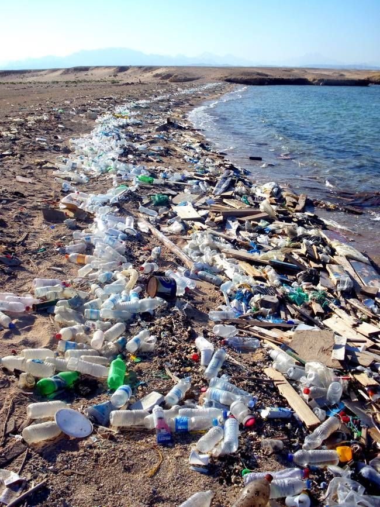

WaterPollution
Water Pollution

About
Water Pollution is when bodies of water are contaminated by different types of human waste and garbage. Bodies of water like rivers, lakes, and oceans are subject to contamination. The way bodies of water get polluted easily is because water is very soluble and can dissolve and break down liquids. When a dangerous or poisonous substance gets into the water, overtime it breaks down and spreads. Waste from farms, factories, and cities add more and more pollution to the water. Waste Water, or used water, is also a major cause of pollution. When water flows through sewage systems, and is not treated or filtered, it leads to the water becoming poisonous and damaging other bodies of water. 90 percent of this waste water is poured back into the ocean.
Effects
Water Pollution can seriously affect our health. Contaminated and poisoned water is unsafe for people to drink and many households do not have access to clean water. Unclean water can lead to diseases and sicknesses; Unsafe water poisons about a billion people yearly. The environment is also very negatively impacted by water pollution. Toxic waste and garbage in the water can seriously affect wildlife and plants. Many species of animals that rely on the oceans to survive are put at major risk because these toxins can kill them or spread diseases through them. In some cases, the pollution can breed dangerous algae species which can destroy the wildlife and contaminate the water. A way people can help prevent adding more to water pollution, is reducing the amount of plastic you use and try to save water.